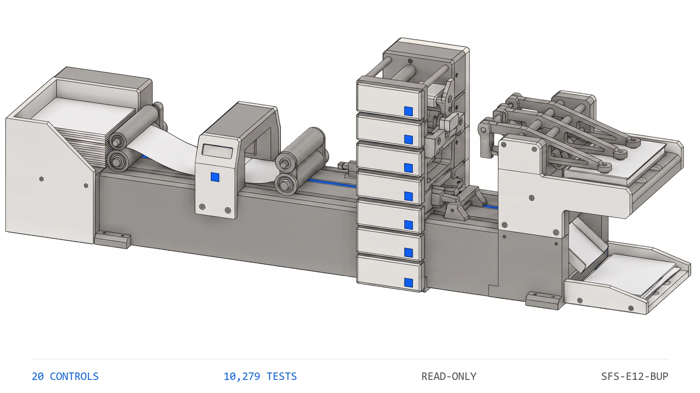

2791
Tests
the collected checks that pin this engine's behavior
ENGINE 12
SFS-E12-BUP · REVENUE RECOGNITION · REV 2026-07-22 · PRODUCTION
PRODUCTION = runnable end-to-end, CI-backed, full test suite passing. All data fictional and seeded.
A liability until the unit closes
A buyer pays for a home upgrade months before the home closes. That money is not revenue when it arrives -- it is a liability, and it stays one until the unit actually closes. Between those two dates the same figure has to appear consistently in four places, each maintained by a different person on a different cadence. This engine reads all four and runs twenty deterministic controls over them: does every upgrade belong to a real unit exactly once, is deferred revenue released on close and only on close, does the closing entry balance, is sales tax carried as a liability, and do the four schedules agree. It never posts and never writes to a source artifact.
The failure mode here is almost never a wrong number. It is the same number failing to move everywhere at once -- released in the schedule but not the ledger, repriced in one report and not the next. Those breaks survive review precisely because every individual page still foots. The engine ships one planted defect per registered control, so the benchmark is a command rather than a claim.
Seven control families run in registry order over each upgrade book. The first proves the others had something to read.
An upgrade programme keeps four schedules of the same money, and the money changes character exactly once: on the day the unit closes it stops being a liability and becomes revenue. Every recurring failure here is that change happening in some schedules and not others. A unit closes and the deferred balance is released in the closings schedule but never posted to the ledger, so the liability account carries a balance for units that no longer exist. An upgrade is repriced and the cost-to-complete is updated while the proforma keeps the old figure, so margin is reported against a price nobody is charging. A change order is executed and the committed cost never lands, so an overrun looks like an overrun rather than an approved increase. None of these makes any individual page fail to foot, which is exactly why they survive review and why a rule finds them and a reviewer does not.
The seeded demo runs every control over every book7. The CLI generates 22 fictional upgrade books -- one clean baseline and one carrying each planted defect -- then runs all 20 controls over each. The clean book returns PASS with no flags; every defect book returns REVIEW or FAIL and names the control it tripped along with the reason that control exists.
Paid, finished and settled is still not revenue8. A test sets buyer-paid, work-complete and invoice-settled on an open unit and asserts the recognition control stays silent, because none of those recognises revenue. A companion test recognises a single cent before close and asserts it fails. There is no immaterial amount of premature recognition.
A flipped sign is caught in both directions9. The cost-to-complete states cost positive and the proforma states it negative, so the tie negates one side. Tests assert that the correct negative line passes and that a positive one fails -- the check that would be inverted by the obvious raw comparison.
| Command | Operation | Output | Exit | Artifacts |
|---|---|---|---|---|
python run.py | generate the seeded fictional corpus, run all twenty controls, write both reports | per-book verdicts and every actionable finding, then the overall verdict | 2 for the bundled corpus, which carries one planted defect per control by design | upgrade_report.md, upgrade_report.json, samples/ |
python -m upgrade_engine samples | analyze an existing folder of upgrade books without regenerating it | per-book verdicts and findings | 0 PASS / 1 REVIEW / 2 FAIL / 3 usage | none unless --json or --md is passed |
python -m upgrade_engine samples --generate --quiet | regenerate the corpus and print only the overall verdict | a single verdict line | 0 PASS / 1 REVIEW / 2 FAIL / 3 usage | samples/ |
python -m pytest | run the full test suite for this engine | 279 passed | 0 when every test passes | none |
| Measure | Result |
|---|---|
| Engine tests10 | 279 tests collected live collection from the engine directory |
| Registered controls11 | 20 controls counted from the registry, not from documentation |
| Planted defects12 | 21 defect books every registered control has at least one book that trips it |
| Control coverage13 | 100 percent of controls with a planted defect no control ships without a book demonstrating it firing |
The engine has no write path and therefore no autonomy to gate. It produces findings; a person decides.
Deterministic envelope. seeded fictional inputs, read-only operation, offline default mode.
Demo gate. FAIL on the bundled corpus, by design -- it carries one planted defect per registered control
| Severity | Verdict | Action |
|---|---|---|
| No findings above PASS | PASS | send the mechanically clean book to the documented manual review |
| One or more FLAG, no FAIL | REVIEW | a human resolves each flag; none of them misstates a figure |
| One or more FAIL | FAIL | a schedule disagrees with another or with the ledger; correct it before the close package is relied on |

Distribution: public repository, MIT license.
One conversation: you describe the work that consumes your team's month; we tell you plainly what this engine can take over, what it can't, and what a scoped first phase would cost. Your people keep approval authority.
Book a free consultation